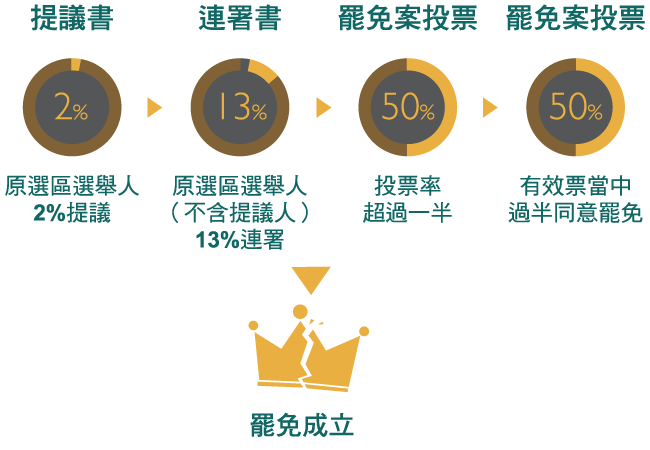

憲法133實踐聯盟發起的BMW罷免吳（育昇）行動到底是什麼活動？
本活動由憲法133實踐聯盟發起，主要訴求為實踐我國憲法賦予人民的罷免權。近年來馬英九政府無數的政策與法案，都因其挾著國會多數的優勢，而恣意妄為、背離民意。立法委員不應該是執政者的橡皮圖章，也更不應該以黨為尊、以馬為首。對此亂象，憲法133實踐聯盟於2013年8月25日正式啟動第一波行動––罷免國民黨馬意立委吳育昇「Ba Mien Wu 罷免吳」之BMW行動。
為什麼要發起這個活動？罷免一個立委對人民來說很重要嗎？
我國憲法第17條賦予人民「選舉、罷免、創制、複決」四項參政權，以落實「人民是國家主人」的國民主權原則。其中「罷免權」即是為了防止人民公僕當選之後，背棄民意，因此憲法第133條明定「被選舉人得由原選舉區依法罷免之」。但自憲法制定以來，第133條至今仍未成功落實，目前尚無任何一位被選舉人成功被罷免。因此，許多政治人物有恃無恐，認為只要選舉選上了，無論在這個位置上如何胡作非為，都不會受到民意制裁。
在此同時，由於各黨派皆有自家黨紀，一旦立委言行舉止與黨的意向不同，動輒以黨紀處罰。比起虛無縹緲的民意制裁，黨紀制裁更為直接也更迅速。也因此許多政治人物逐漸從民意代表，轉為黨意代表。
憲法133實踐聯盟希望藉著公民罷免運動，清楚地告訴台灣人民所選出來的民意代表：諸位代表的是該選區的所有選民，而不是你所屬的政黨。請民意代表重視民意，而不是黨意至上。
罷免要如何進行呢？
憲法133實踐聯盟發起人之一清大榮譽退休教授彭明輝整理了罷免案的流程，可概分為4個階段。

- 徵求選區內2%選舉人同意「提議罷免」。在本次罷免活動中，該選區2%選舉人的人數為5800人。但就職未滿一年內不得罷免。
- 向選區內的選舉委員會提出罷免提議書，正、副本各一份，提議人名冊二份。選舉委員會收到罷免案提議後，要在25日內查對提議人名冊。選舉委員會查對名冊符合規定人數後，就會通知提案人領取連署人名冊格式，開始連署罷免。
- 連署罷免階段是最重要的階段。如果要罷免立法委員，連署時限為30日，在30日以內連署人要達到選區內13%選舉人 。而提議人不得為連署人。也就是說，這13%的連署人不能和2%的提議人重複。在本次罷免活動中，該選區13%選舉人的人數為37700人。
連署名冊收集完畢以後，要送到選舉委員會。選舉委員會收到罷免案連署人名冊後，需在40日內查對名冊。名冊查對完畢以後，選舉委員會要宣告罷免案是否成立。如果不成立，一年之內不得再度罷免。如果罷免案成立的話，要將罷免理由書送交給被罷免人。而被罷免人在10日內要提出答辯書。被罷免人提出答辯書5日後，選舉委員會就要公告罷免案的投票時間、罷免理由書及答辯書。 - 罷免案投票，投票必須要有1/2選舉人投票，有效票中要有1/2同意罷免。如果沒有達到，均視為罷免否決。
目前台灣的罷免法律有沒有問題？
第一，目前罷免法與與公投法的問題接近，在於成案門檻與通過門檻過高，非常不合理。以立法委員的選舉、罷免而言，總提案及連署人數要達選區內15%，才可成案。在某些選區，這已經接近，甚至超過一位立委需要的當選票數。其次，在30天內要完成13%的連署，更是全世界有罷免制度國家中最為嚴苛的條件。最後，要成功罷免，需要1/2選舉人投票，其中有效票中要有1/2罷免案才通過。
選罷法中規定此門檻表面理由是為了避免罷免案之氾濫，但實際上則是立法委員「自肥自利」的規定。憲法133實踐聯盟認為如此繁複且難度高的門檻，嚴重阻礙人民行使憲法第17條所賦予之參政權，並且違背憲法第2條中所提「主權屬於國民全體」之主權在民精神。
 第二，根據選罷法第86條針對罷免案之宣傳規定為「罷免案之進行，除徵求連署之必要活動外，不得有罷免或阻止罷免之宣傳活動」。憲法133實踐聯盟認為，選舉得進行必要之宣傳與造勢，何以罷免案不得進行宣傳？罷免權為憲法明文賦予之權，為何會演變成人民必須偷偷摸摸來行使參政權？如果資訊無法透明，無法讓人民知道政客越界違法在何處，又如何訴求這麼高的投票率，達成成功的罷免呢？這擺明是執政者所立下，讓公民權「看的到吃不到」的陰謀。此法無疑否定了人民所擁有的罷免權，並且讓罷免案成為一個「不能說的秘密」。選舉可以宣傳，罷免不能宣傳，不合理到了荒謬的程度。
第二，根據選罷法第86條針對罷免案之宣傳規定為「罷免案之進行，除徵求連署之必要活動外，不得有罷免或阻止罷免之宣傳活動」。憲法133實踐聯盟認為，選舉得進行必要之宣傳與造勢，何以罷免案不得進行宣傳？罷免權為憲法明文賦予之權，為何會演變成人民必須偷偷摸摸來行使參政權？如果資訊無法透明，無法讓人民知道政客越界違法在何處，又如何訴求這麼高的投票率，達成成功的罷免呢？這擺明是執政者所立下，讓公民權「看的到吃不到」的陰謀。此法無疑否定了人民所擁有的罷免權，並且讓罷免案成為一個「不能說的秘密」。選舉可以宣傳，罷免不能宣傳，不合理到了荒謬的程度。
罷免是不是會讓台灣的政治更混亂嗎？
無法究責、人民無法監督的政治，才是混亂的根源。如今，不論立委通過了什麼違害國家經濟、環境、長遠發展的法案，還是與財團勾結謀利，在其任內，人民完全莫可奈何。以公司為例，如果工作不認真、打混摸魚，甚至做了錯誤的決策卻不會被公司辭退，請問員工還會認真嗎？而現在，人民選上的政治人物和民意代表就是在一間「四年內不會趕人的公司」裡上班，是真正的「由你玩四年」。
民主政治即為責任政治，無法究責的政治生態，就不會有健康的民主體質。一旦有罷免成功的案例，立委、政治人物才會心生警惕，人民才能拿回「主人」的力量。日後選上的立委，也不敢再一心只有黨意，沒有民意。在關係國家的重大事件裡，他們才會重視民意，做出符合最多數人民利益的決策。
為什麼憲法133實踐聯盟選擇罷免立法委員吳育昇？
在立法院諸多立委之中，吳育昇是唯馬是從、黨意至尊的馬首立委。以下是憲法133實踐聯盟所列出的九項吳育昇委員「只問馬意、不顧民意」具體惡行：
一、悍然放行毒牛
 2006年，吳育昇於國會質詢時，大義凜然地表示：貿然開放美國牛肉進口是「棄台灣人民健康於不顧！」；然而，在馬英九誓言要進口美牛後，吳育昇立場幡然驟變，不顧民眾反彈聲浪，帶頭指揮國民黨團強勢通過美牛案。令人無法置信的是，吳育昇更進一步悍然表示，即使立法院不通過此案，也要「用行政命令直接進口美牛」，視民主為無物，徹底背棄選民託付。在馬英九上台前，吳育昇大聲疾呼：「食用美國牛有健康的疑慮，進口就是公然違法！」；馬英九上台後，不惜踐踏民主也要護航美國毒牛進口，棄人民生命健康與食品安全於不顧，違反民意，只問馬意，此為其一。
2006年，吳育昇於國會質詢時，大義凜然地表示：貿然開放美國牛肉進口是「棄台灣人民健康於不顧！」；然而，在馬英九誓言要進口美牛後，吳育昇立場幡然驟變，不顧民眾反彈聲浪，帶頭指揮國民黨團強勢通過美牛案。令人無法置信的是，吳育昇更進一步悍然表示，即使立法院不通過此案，也要「用行政命令直接進口美牛」，視民主為無物，徹底背棄選民託付。在馬英九上台前，吳育昇大聲疾呼：「食用美國牛有健康的疑慮，進口就是公然違法！」；馬英九上台後，不惜踐踏民主也要護航美國毒牛進口，棄人民生命健康與食品安全於不顧，違反民意，只問馬意，此為其一。 二、縱容油電雙漲
 當馬政府正因執政無能導致經濟疲弱時，不思國營事業改革，不斷調漲油價、電價，不僅加重一般人民的經濟負擔，更進一步帶動物價上漲，落井下石。在平均薪資水準倒退至十數年前的此時，馬政權只圖少數財團獲利，卻使大多數人民陷入痛苦深淵。吳育昇不僅未替人民代言，竟更以「油電雙漲仍有兩成民眾支持」之說詞，強力護航油電雙漲過關。執行馬意，劫貧濟富，將人民福祉棄如敝屣，此為其二。
當馬政府正因執政無能導致經濟疲弱時，不思國營事業改革，不斷調漲油價、電價，不僅加重一般人民的經濟負擔，更進一步帶動物價上漲，落井下石。在平均薪資水準倒退至十數年前的此時，馬政權只圖少數財團獲利，卻使大多數人民陷入痛苦深淵。吳育昇不僅未替人民代言，竟更以「油電雙漲仍有兩成民眾支持」之說詞，強力護航油電雙漲過關。執行馬意，劫貧濟富，將人民福祉棄如敝屣，此為其二。 三、擁核危害後世
 吳育昇無視2011年日本福島核災造成的毀滅性災難，面對國內高漲的反核聲浪，為貫徹馬英九意志，大玩兩面手法。選季未到之時，支持核一、核二延役，但面臨2012年大選，立刻改口保證核一、核二除役。尤有甚者，今年更假意提出「核四安檢完成，才啟動核四公投」之提案，但事實上卻根本未將提案送出，試圖欺騙人民。吳育昇一貫的邏輯是：當馬意與民意衝突，馬意志永遠凌駕於民眾意志。人民根本無法相信，在吳育昇於國會貫徹馬意的運作下，立法院得以認真審查服貿協議，為多數人民權益把關。對於人民所提出「立即停建核四」、「重啟服貿談判」的訴求，吳育昇更是根本棄之不理。
吳育昇無視2011年日本福島核災造成的毀滅性災難，面對國內高漲的反核聲浪，為貫徹馬英九意志，大玩兩面手法。選季未到之時，支持核一、核二延役，但面臨2012年大選，立刻改口保證核一、核二除役。尤有甚者，今年更假意提出「核四安檢完成，才啟動核四公投」之提案，但事實上卻根本未將提案送出，試圖欺騙人民。吳育昇一貫的邏輯是：當馬意與民意衝突，馬意志永遠凌駕於民眾意志。人民根本無法相信，在吳育昇於國會貫徹馬意的運作下，立法院得以認真審查服貿協議，為多數人民權益把關。對於人民所提出「立即停建核四」、「重啟服貿談判」的訴求，吳育昇更是根本棄之不理。 四、共毀公視幫兇
 當馬英九親信林益世因貪腐遭到判刑時，絕大多數人民或許未注意吳育昇與林益世過去攜手貫徹馬意志的種種惡行。將政治黑手深入公視，可謂典型代表。由林益世帶頭透過修改公視法、擴張董事人數之惡質手段，直接肇致公視運作的癱瘓。在此政治力扭曲公視的過程中，吳育昇即與林益世攜手合作、密切配合。在林益世遭法院收押後，吳育昇以黨團書記長的身份，繼續貫徹馬英九操控公視之計畫，只圖調降公視董事同意權門檻，卻不願面對公視違法運作的質疑，一方面延續由林益世建構的公視掌控系統，一方面使公共電視的改革延宕不前，此為其四。
當馬英九親信林益世因貪腐遭到判刑時，絕大多數人民或許未注意吳育昇與林益世過去攜手貫徹馬意志的種種惡行。將政治黑手深入公視，可謂典型代表。由林益世帶頭透過修改公視法、擴張董事人數之惡質手段，直接肇致公視運作的癱瘓。在此政治力扭曲公視的過程中，吳育昇即與林益世攜手合作、密切配合。在林益世遭法院收押後，吳育昇以黨團書記長的身份，繼續貫徹馬英九操控公視之計畫，只圖調降公視董事同意權門檻，卻不願面對公視違法運作的質疑，一方面延續由林益世建構的公視掌控系統，一方面使公共電視的改革延宕不前，此為其四。五、力挺媒體壟斷
 中視年初重播跨年晚會時，將藝人青峰（蘇打綠樂團）「反媒體壟斷」發言直接刪除，引發民眾抗議聲浪。吳育昇不改打壓異議之慣行，竟悍然表示，「刪除言論也是一種媒體自由」。當反媒體壟斷已成台灣公民社會的共識之後，吳育昇再度玩弄兩面手法，先強調國民黨也贊成反媒體壟斷立法，公開承諾在立法院完成廣電三法修正；但當馬政府屈從財團壓力，一夕變卦決定封殺法案時，吳育昇再度扮演貫徹馬意志的角色，以黨鞭身份率國民黨立院黨團悍然封殺反媒體壟斷法案。面對公民團體的質疑，吳育昇以推動反媒體壟斷專法為託詞，企圖掩飾其配合馬意護航財團的劣行。然而，在不到半年的時間內，吳育昇即再度配合馬政權，在立法院封殺其口口聲聲列為優先法案的反媒體壟斷專法，再次暴露其謊言連篇的虛偽假面，此為其五。
中視年初重播跨年晚會時，將藝人青峰（蘇打綠樂團）「反媒體壟斷」發言直接刪除，引發民眾抗議聲浪。吳育昇不改打壓異議之慣行，竟悍然表示，「刪除言論也是一種媒體自由」。當反媒體壟斷已成台灣公民社會的共識之後，吳育昇再度玩弄兩面手法，先強調國民黨也贊成反媒體壟斷立法，公開承諾在立法院完成廣電三法修正；但當馬政府屈從財團壓力，一夕變卦決定封殺法案時，吳育昇再度扮演貫徹馬意志的角色，以黨鞭身份率國民黨立院黨團悍然封殺反媒體壟斷法案。面對公民團體的質疑，吳育昇以推動反媒體壟斷專法為託詞，企圖掩飾其配合馬意護航財團的劣行。然而，在不到半年的時間內，吳育昇即再度配合馬政權，在立法院封殺其口口聲聲列為優先法案的反媒體壟斷專法，再次暴露其謊言連篇的虛偽假面，此為其五。 六、媚共欺侮台商
 在我國於去年與對岸簽署「投資保障協議」時，吳育昇再度顯現其前後不一的面目。針對在中國大陸被逮捕台商的「人身安全保障」，吳育昇先假意贊成必須「無例外地」、「一律」通知在台家屬。但在由國民黨主導的黨團密室協商過後，卻使此「無例外條款」莫名其妙地消失，導致即使簽署了「投資保障協議」，中共政權仍可以在逮捕台商時，「例外地」不通知其家屬。吳育昇作為黨鞭，為了貫徹馬英九意志，視台商人身安全於無物，此為其六。
在我國於去年與對岸簽署「投資保障協議」時，吳育昇再度顯現其前後不一的面目。針對在中國大陸被逮捕台商的「人身安全保障」，吳育昇先假意贊成必須「無例外地」、「一律」通知在台家屬。但在由國民黨主導的黨團密室協商過後，卻使此「無例外條款」莫名其妙地消失，導致即使簽署了「投資保障協議」，中共政權仍可以在逮捕台商時，「例外地」不通知其家屬。吳育昇作為黨鞭，為了貫徹馬英九意志，視台商人身安全於無物，此為其六。七、阻修集遊惡法
 馬英九在競選總統時，口口聲聲要修改集遊惡法，然而在當選之後，卻背棄當初的承諾。不僅在陳雲林來台期間，以集團性的國家暴力行為，踐踏人民的基本權利，更以集遊惡法起訴挺身抗議馬政權惡行的學者。當學者專家與公民團體共同推動馬英九原本承諾的集遊惡法修正時，時任立法院內政委員會召委的吳育昇，表面上，主張修改集遊惡行法以化解民怨，背地裡，卻使用各種議事規則杯葛修法，嗣後更在眼見可能無法阻擋修法之際，竟將攸關修法的文件放在口袋，刻意阻擋集遊惡法的修正，即使我國已將兩項聯合國「國際人權公約」視為國內法律之際，集遊惡法迄未修正。目前，人民仍因抗議政府的倒行逆施，卻反遭馬政府以違反集遊惡法追訴迫害。更有甚者，在面對人民的抗議，吳育昇竟公開主張應該以「強而有力」的作為，強力鎮壓人民的抗議，配合馬政權侵害人權，此為其七。
馬英九在競選總統時，口口聲聲要修改集遊惡法，然而在當選之後，卻背棄當初的承諾。不僅在陳雲林來台期間，以集團性的國家暴力行為，踐踏人民的基本權利，更以集遊惡法起訴挺身抗議馬政權惡行的學者。當學者專家與公民團體共同推動馬英九原本承諾的集遊惡法修正時，時任立法院內政委員會召委的吳育昇，表面上，主張修改集遊惡行法以化解民怨，背地裡，卻使用各種議事規則杯葛修法，嗣後更在眼見可能無法阻擋修法之際，竟將攸關修法的文件放在口袋，刻意阻擋集遊惡法的修正，即使我國已將兩項聯合國「國際人權公約」視為國內法律之際，集遊惡法迄未修正。目前，人民仍因抗議政府的倒行逆施，卻反遭馬政府以違反集遊惡法追訴迫害。更有甚者，在面對人民的抗議，吳育昇竟公開主張應該以「強而有力」的作為，強力鎮壓人民的抗議，配合馬政權侵害人權，此為其七。八、無視生態浩劫
在法治國家中，司法救濟是人民防止行政濫權的最後防線。近年來，違法破壞自然生態的環境開發案中，法院更發揮糾正改錯的重要功能。然而，對於蓄意違反環境影響評估要求的開發工程，當法院宣告開發違法必須停止時，吳育昇卻視法治國精神為無物，罔顧生態環境，提案修正環評法，企圖使經法院判決違法無效的開發案仍可繼續動工，不僅為破壞生態環境的違法開發案護航，更嚴重踐踏司法尊嚴，此為其八。
九、全力護航綠卡
吳育昇於2009年曾提出國籍法修正草案，清楚表明「中華民國國民擁有綠卡者，不得擔任中華民國公職」；然而當馬英九身陷綠卡風暴，吳育昇對於此項國籍法修正的態度則立即轉變，即使法案無端遭國民黨團封殺，仍選擇噤聲不語；在國會投機地閃躲，面對公開質疑，則傲慢地不予回應，此為其九。
由前諸種種具體事跡，已清楚地呈現吳育昇虛偽的假面：從主導提案，再否決提案；從提倡修法，再封殺修法。這層出不窮的兩面手法，貫穿其中的只有「把人民當傻子、奉馬英九為皇帝」這個邏輯！
從進口美牛到油電雙漲，從踐踏司法到犧牲台商，從力挺集遊惡法到護航媒體壟斷，從支持核四進而危害後世，吳育昇一次又一次地「遵循馬意、霸凌民意」，根本忘了立委的職責，更將選民的託付置諸腦後。吳育昇2008年當選立委後，立即杯葛退稅方案的名言：「反正年底沒有選舉，我們不怕！」，充分地反映出其視人民為草芥的傲慢！在2012年當選後，更為了阻止人民行使罷免權，立即提案修法，提高罷免連署的難度，踐踏人民的直接民權！人民根本無法相信，在吳育昇於國會貫徹馬意的運作下，立法院得以認真審查服貿協議，為多數人民權益把關。
長期屈從馬意，吳育昇為自己換來了國民黨實踐二等獎章（國民黨首位獲此「殊榮」的黨團書記長），卻遺忘了自己監督政府的職責，更背棄了選民的託付。既然吳育昇的心中只有馬意，早已沒有民意，就應該將他逐出屬於人民的國會！
我要如何參加罷免活動？
根據憲法第133條規定，罷免必須由原選區之選民才能罷免，故只有吳育昇的選區（新北市第一選區）的民眾才能進行罷免連署及投票。
設籍在新北市第一選區（淡水、林口、泰山、三芝、石門、八里）的朋友們，請至憲法133實踐聯盟部落格下載『罷免連署書』，依範例填寫後，親簽或蓋章，郵寄至台北郵政14-224號信箱『憲法133實踐聯盟』收即可。下載罷免提議書範本
提醒：表格內有三項欄位請切勿填寫「編號」、「領銜人」、「日期」。
如果我不在該選區，我要如何參與這個活動？
- 拿起電話，撥打給你在「淡水、林口、泰山、三芝、石門、八里」的親朋好友，請他們趕緊參加連署。
- 協助分享憲法133實踐聯盟粉絲頁內容更新。當越多人知道罷免權的重要，就會有越多當地居民願意站出來，請全台民眾給在地選民力量，做為他們的後盾。
如果我想要獲得更多資訊，請問網路上有相關資源嗎？
- 延伸閱讀：「吳育昇罷免理由書」
- 更多資源
「憲法133實踐聯盟blog」
「憲法133實踐聯盟Facebook粉絲團」 - 採取行動
「參加罷免連署」
「打電話給立委施壓，要求他們承諾以民意為依歸」
閱讀更多資料
和您設籍在新北市第一選區的親朋好友討論罷免活動。
分享並追蹤憲法133實踐聯盟Facebook粉絲頁 - 我有意見：請發mail到：constitution133+opinion@gmail.com
歡迎各位索取原檔印製。感謝所有提供修改意見的朋友。下載原始檔案：http://goo.gl/yKvufe